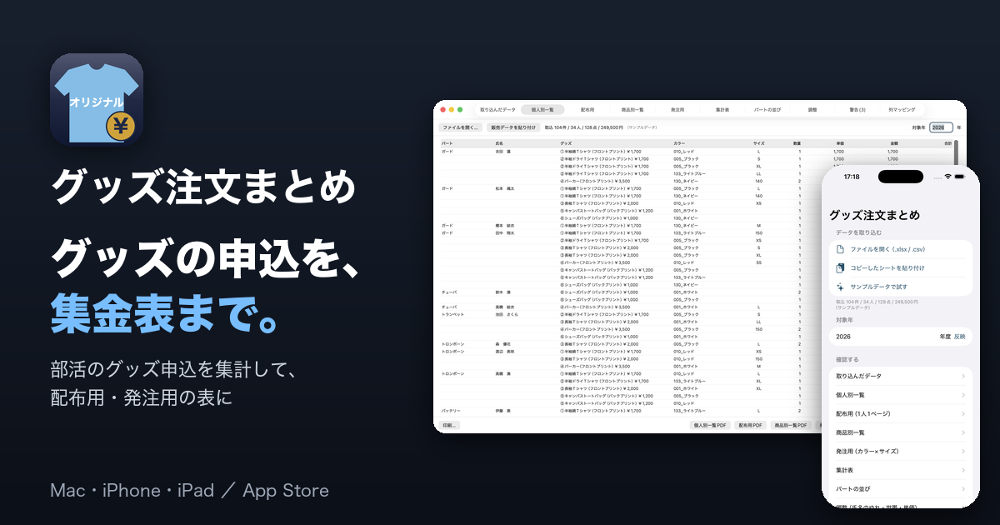

グッズ注文まとめ

グッズ注文まとめは、部活やサークルのオリジナルグッズ販売で、Googleフォームに集まった申込を取り込んで、個人別の明細・配布用の明細（1人1ページ）・商品別の一覧・業者に渡す発注用の数量表・集金表を PDF と Excel で作る macOS / iPadOS / iOS アプリです。データはすべてお使いの端末の中だけで処理され、外部に送られることはありません。
使い方（基本の流れ）
- Googleフォームの回答スプレッドシートを開き、メニューの「ファイル」→「ダウンロード」→「Microsoft Excel（.xlsx）」で保存します。
- アプリの「ファイルを開く」でその .xlsx を選びます（CSV でも読めます。Mac では、シートを見出し行ごと全選択してコピーし、「販売データを貼り付け」でも取り込めます）。
- 「取込 104件 / 34人 / …」のように件数と合計が表示されたら取り込み完了です。
- 「調整」で氏名の表記ゆれ・兄弟の合算・単価を直し、「警告」で二重回答などを確かめます。
- 「個人別一覧PDF」「配布用PDF」「商品別一覧PDF」「発注用PDF」「集計表PDF」「Excel」のボタンで書き出します。iPad / iPhone では共有シートから「ファイルに保存」や AirDrop で渡せます。
初めて使うときは「サンプルデータで試す」を押すと、架空の申込データで一通りの動きを確かめられます。
フォームの作り方（このアプリで読めるシートにするために）
- 質問の見出しに「区分（パート・ポジション・学年など）」「氏名」「グッズ（商品）」「カラー」「サイズ」「数量」という言葉を含めてください。列の並び順や数は自由です。
- グッズの選択肢に「①半袖Tシャツ ￥1,700」のように丸数字と価格を入れておくと、並び順と単価を自動で読み取ります。価格が無い場合は数量だけを集計します（単価はアプリ内でも入力できます）。
- 見出しの言葉が違って読めなかったときは、「列マッピング」でどの列が何かを指定できます。
よくある質問
- Q. Googleスプレッドシートに直接つなげますか？
- A. つなぎません。このアプリは外部と通信しない設計です。スプレッドシートの「ファイル」→「ダウンロード」で .xlsx を保存して開いてください。
- Q. 「区分・グッズの列を見つけられませんでした」と出ます
- A. 見出しの言葉がアプリの知っている言葉と違っています。「列マッピング」で役割を指定して「再解析」を押すか、「設定」→「列の判定」にその見出しに含まれる言葉を足してください。
- Q. 同じ人が2人として集計されます
- A. 「調整」の「表記ゆれの候補」に出ていれば、残す表記を選んで「まとめる」を押してください。次回からは自動で同じ人として扱います。スペースの有無だけの違いは、最初から自動でまとめています。
- Q. 兄弟をまとめて集金したい
- A. 「調整」の「兄弟の合算（同じ世帯）」で2人以上を「同じ世帯にする」と、集計表と配布用PDFで1つにまとまります。
- Q. 発注用PDFに金額が出ないのはなぜですか？
- A. 業者に渡す表なので、意図的に金額を載せていません。金額は個人別一覧・商品別一覧・集計表・Excel に出ます。
- Q. iPad / iPhone で Google ドライブのファイルが選べません
- A. 「ファイル」アプリの左の一覧（ブラウズ）で「…」→「サイドバーを編集」を開き、Google Drive をオンにしてください。以後、アプリの「ファイルを開く」からも Google ドライブの中が見えます。
- Q. 印刷できますか？
- A. Mac は「印刷…」（⌘P）で、いま見ている表をそのまま印刷できます。iPad / iPhone は PDF を書き出してから、ファイルアプリなどで印刷してください。
お問い合わせ
不具合のご報告・ご要望は、以下のメールアドレスまでお気軽にご連絡ください。
emc.hs07@gmail.com
プライバシーポリシー
 文字アトリエ
文字アトリエ PDF PageRebind
PDF PageRebind Futamado
Futamado CellStay
CellStay ひきだしメニュー
ひきだしメニュー PhotoParcel
PhotoParcel PhotoParcel Select
PhotoParcel Select チャプたん
チャプたん チャプたんブックマーク
チャプたんブックマーク MIDIアトリエ
MIDIアトリエ 事務電卓
事務電卓 Tecola
Tecola